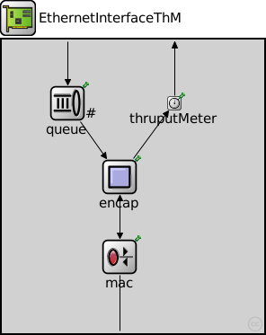

This documentation is released under the Creative Commons license
This documentation is released under the Creative Commons licenseEthernet network interface with thorughput meter. Complements EtherMAC and EtherEncap with an output queue for QoS and RED support.
See also: EthernetInterface2, EthernetInterfaceNoQueue
| Name | Type | Default value | Description |
|---|---|---|---|
| queueType | string | "DropTailQueue" |
| Name | Value | Description |
|---|---|---|
| display | i=block/ifcard;bgl=2 |
| Name | Direction | Size | Description |
|---|---|---|---|
| netwIn | input | ||
| netwOut | output | ||
| phys | inout |
| Name | Type | Default value | Description |
|---|---|---|---|
| mac.promiscuous | bool | false |
if true, all packets are received, otherwise only the ones with matching destination MAC address |
| mac.address | string | "auto" |
MAC address as hex string (12 hex digits), or "auto". "auto" values will be replaced by a generated MAC address in init stage 0. |
| mac.txrate | double | 100Mbps |
maximum data rate supported by this station (bit/s); actually chosen speed may be lower due to auto- configuration. 0 means fully auto-configured. |
| mac.duplexEnabled | bool | true |
whether duplex mode can be enabled or not; whether MAC will actually use duplex mode depends on the result of the auto-configuration process (duplex is only possible with DTE-to-DTE connection). |
| mac.mtu | int | 1500 | |
| thruputMeter.startTime | double | 0s | |
| thruputMeter.batchSize | int | 50 | |
| thruputMeter.maxInterval | double | 1s |
// // Ethernet network interface with thorughput meter. Complements EtherMAC and // EtherEncap with an output queue for QoS and RED support. // // @see EthernetInterface2, EthernetInterfaceNoQueue // module EthernetInterfaceThM like INetworkInterface { parameters: string queueType = default("DropTailQueue"); @display("i=block/ifcard;bgl=2"); gates: input netwIn; output netwOut; inout phys @labels(EtherFrame); submodules: queue: <queueType> like OutputQueue { parameters: @display("p=73,71;q=l2queue"); } mac: EtherMAC { parameters: queueModule = "queue"; txQueueLimit = 1; // queue sends one packet at a time @display("p=131,242"); } encap: EtherEncap { parameters: @display("p=131,153"); } thruputMeter: ThruputMeter { @display("p=192,71"); } connections: netwIn --> queue.in; queue.out --> encap.upperLayerIn; thruputMeter.out --> { @display("m=n"); } --> netwOut; encap.lowerLayerOut --> mac.upperLayerIn; encap.lowerLayerIn <-- mac.upperLayerOut; mac.phys <--> phys; encap.upperLayerOut --> thruputMeter.in; }
This documentation is released under the Creative Commons license